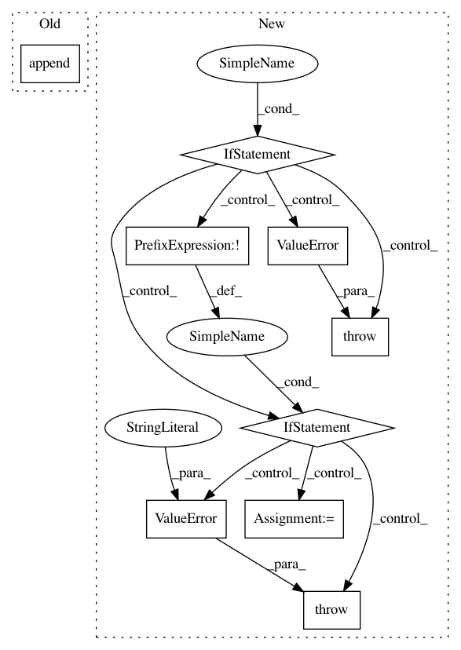

ce597a0b10658043b6d6d8ffed3fff4a6ebbc1ea,stellargraph/layer/appnp.py,APPNP,__init__,#APPNP#Any#Any#Any#Any#Any#Any#Any#Any#,54
Before Change
)
)
//apply softmax
self._layers.append(Softmax())
//gather the nodes from the output indices - inputs = [all node predictions, output node indices]
self._layers.append(
Lambda(lambda inputs:
After Change
if not isinstance(generator, FullBatchNodeGenerator):
raise TypeError("Generator should be a instance of FullBatchNodeGenerator")
if not len(layer_sizes) == len(activations):
raise ValueError("The number of layers should equal the number of activations")
if not isinstance(approx_iter, int) or approx_iter <= 0:
raise ValueError("approx_iter should be a positive integer")
if (transport_probability > 1.0) or (transport_probability < 0.0):
raise ValueError("transport_probability should be between 0 and 1 (inclusive)")
self.layer_sizes = layer_sizes
self.transport_probability = transport_probability
self.activations = activations
self.bias = bias
self.dropout = dropout
self.kernel_regularizer = kernel_regularizer
self.generator = generator
self.support = 1
self.method = generator.method
self.approx_iter = approx_iter
// Check if the generator is producing a sparse matrix
self.use_sparse = generator.use_sparse
if self.method == "none":
In pattern: SUPERPATTERN
Frequency: 3
Non-data size: 9
Instances
Project Name: stellargraph/stellargraph
Commit Name: ce597a0b10658043b6d6d8ffed3fff4a6ebbc1ea
Time: 2019-09-26
Author: u5824685@anu.edu.au
File Name: stellargraph/layer/appnp.py
Class Name: APPNP
Method Name: __init__
Project Name: theislab/scanpy
Commit Name: 81dbae9b7c584c4b7a384dec47a3375febdd1ef3
Time: 2021-02-01
Author: fidel.ramirez@gmail.com
File Name: scanpy/get.py
Class Name:
Method Name: obs_df
Project Name: dmlc/gluon-nlp
Commit Name: 489db85647d6de8a42f9fc5162e1e9ef0831800b
Time: 2018-08-02
Author: leonard@lausen.nl
File Name: gluonnlp/data/dataset.py
Class Name: LanguageModelDataset
Method Name: bptt_batchify